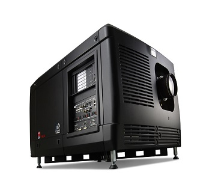

Projetores Digitais
Com a revolução cinematográfica, e a transição dos projetores analógicos para os digitais houve uma mudança na qualidade da imagem e som dos cinemas. Isso porque estes passaram a ser digitais, trazendo ao público a possibilidade de vivenciar uma nova forma de cinema.
A manutenção dos projetores digitais, tornaram-se ainda mais rigorosas. Enquanto nos projetores analógicos as não conformidades eram em seu hardware, as dos projetores digitais são em seus softwares
Quanto a manutenção dos projetores digitais, estas devem ser realizadas obrigatoriamente conforme orientação do fabricante.
Nós da BW Cine Tecnologia com sua equipe certificada, realizamos a instalação, manutenção e treinamento em projetores Barco, Christie, Sony, Nec dentre outros.